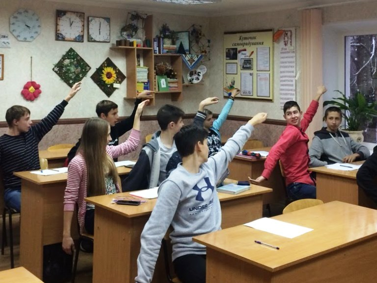

Початок фізкультхвилинки зосереджується на активації та витягуванні хребта і є обов'язковим для зняття компресійного навантаження. Учні, стоячи рівно, роблять глибокий вдих і піднімають руки над головою, з'єднуючи долоні в "замку" і повертаючи їх назовні. Слід максимально потягнутися вгору, витягуючи кожен хребець. Після цього виконується 3-4 повільні бічні нахили тулуба вправо і вліво, щоб добре розтягнути міжреберні м'язи. Далі слідує ретельна розминка шийно-плечового пояса. Голова нахиляється плавно: 3 рази вперед (підборіддя до грудей), 3 рази назад (з обережністю, без різких рухів), і по 3 рази в кожен бік (вухо до плеча). Жодних повних обертань не виконується. Слідом йдуть обертання плечима: 10 разів назад, максимально відводячи плечі, і 10 разів вперед. Потім руки витягуються в сторони на рівні плечей, і виконуються кругові оберти прямими руками (10 разів вперед, 10 разів назад). Після цього руки згинаються в ліктях і виконується 15-20 швидких, енергійних ривків ліктями назад, зводячи лопатки, що допомагає зняти сутулість. Основний блок для тулуба та ніг починається зі скручувань ("Млин"): ноги трохи ширше плечей, руки розведені в сторони. Виконується 10-12 діагональних нахилів, торкаючись протилежною рукою до стопи або підлоги. Потім слідують 10-12 нахилів тулуба вперед, намагаючись дотягнутися руками до підлоги, а потім легкий прогин назад. Для активації нижньої частини тіла виконується 15-20 напівприсідань або згинання ніг назад (торкання п'ятами сідниць) для стимулювання кровообігу. Після фізичних вправ наступає час для гімнастики для очей. Цей блок виконується з нерухомою головою. Починається з швидкого кліпання протягом 15 секунд, після чого очі заплющуються на 5 секунд. Далі слідує чергування фокусу: 5 разів погляд фіксується на кінчику носа або витягнутому пальці, а потім переводиться на найдальшу точку за вікном. Потім очима виконується 4-кратне "малювання" великої горизонтальної та вертикальної цифри 8 у повітрі. Завершується фізкультхвилинка розминкою кистей та дихальними вправами. Учні витягують руки вперед, енергійно стискають пальці в кулак і розтискають (10-12 разів), після чого виконують кругові оберти кистями (по 8 разів у кожен бік) і інтенсивно струшують руки. Наприкінці виконується дихальна вправа: глибокий вдих через ніс, піднімаючи руки вгору, і повільний видих через рот, опускаючи руки і повністю розслабляючи тіло.
